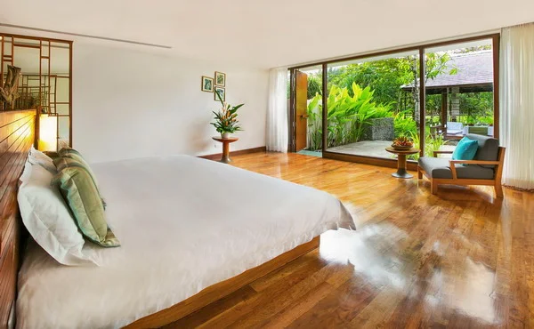
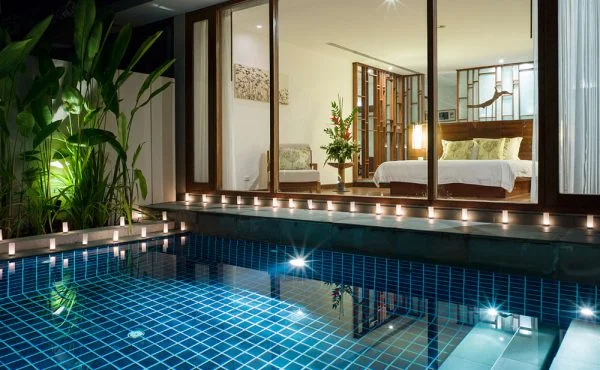
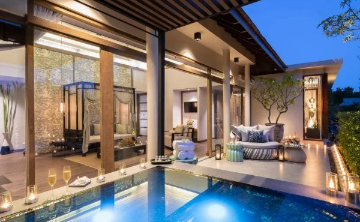
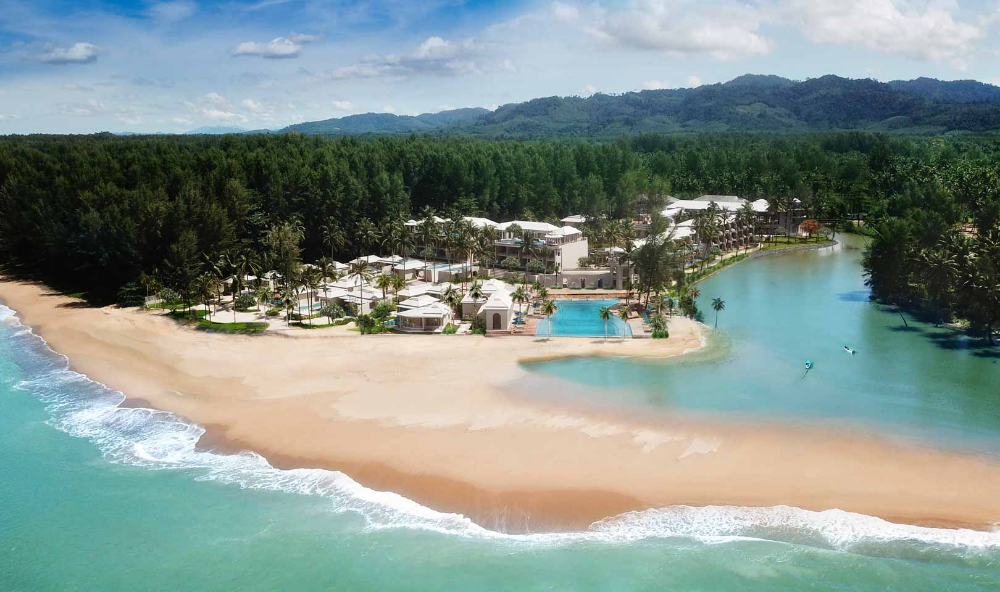
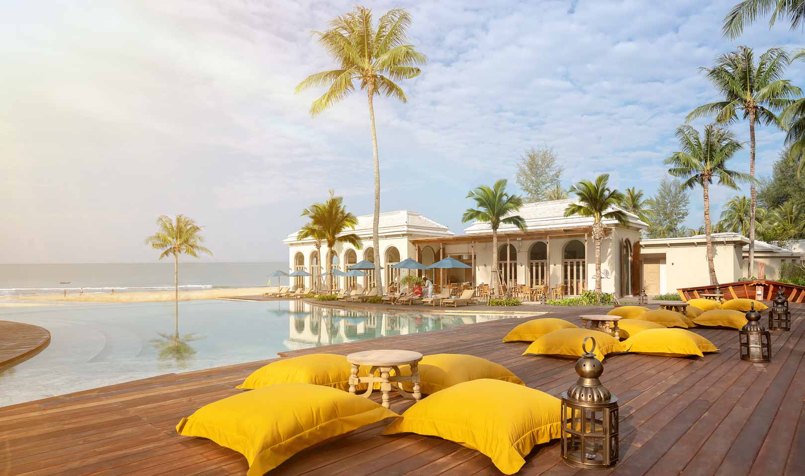
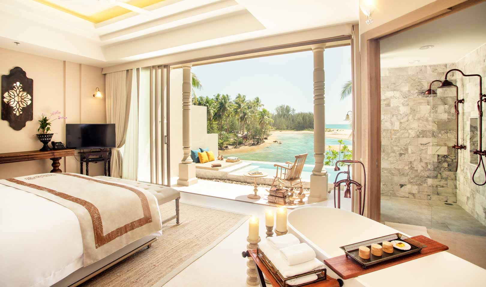
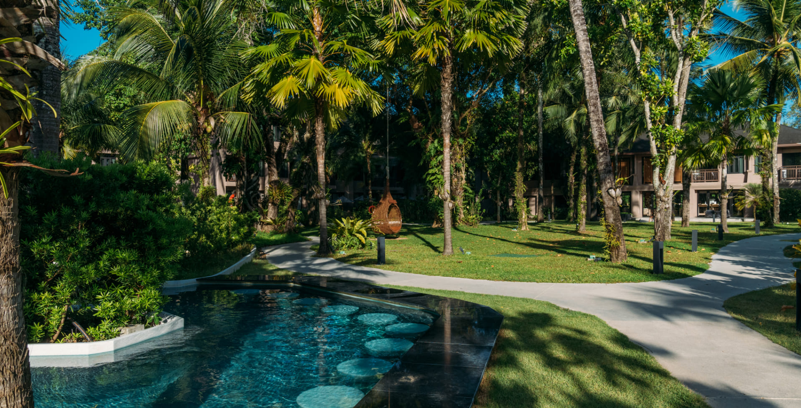
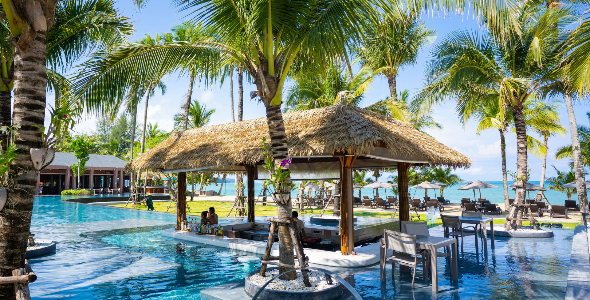
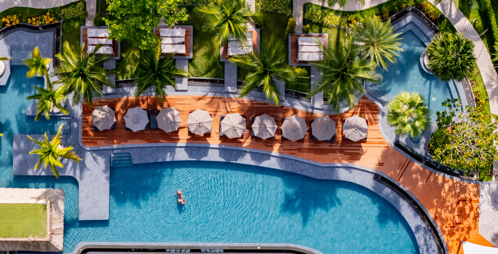
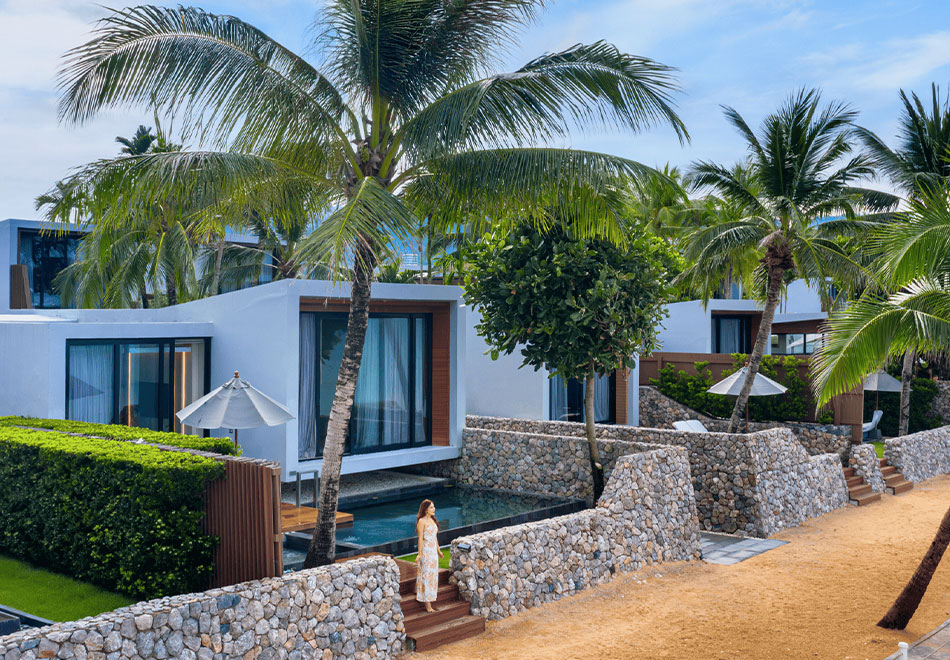

Bang Niang
Marked, restauranter og enkel feriehverdag.
Khao Lak er en av de mest relevante Thailand-destinasjonene for norske familier: lange strender, gode resorter, rolig tempo og enkel vei til snorkling og natur.
Velg base etter reisestil før du velger hotell. Det gjør dagene enklere og reduserer unødvendig transport.
Marked, restauranter og enkel feriehverdag.
Praktisk og sentralt med strand og restauranter.
Roligere resortområde med god plass.
Velg strandresort når du vil ha enkel feriehverdag.
Bang Niang Market fungerer godt som en rolig kveldstur.
Similan-tur passer best når barna tåler en lengre båtdag.
Hvert hotell er presentert med ekte bilder hentet fra hotellets egen nettside. Sjekk alltid pris og tilgjengelighet hos hotellpartneren.




Boutique-luksus. Et tydelig hotellvalg for par og romantikk.




Designresort. Et tydelig hotellvalg for par og familie.




Praktisk resort. Et tydelig hotellvalg for familie og strand.


Moderne boutique. Et tydelig hotellvalg for par og design.
Marked, sjømat og uformelle restauranter.
Matboder, småbutikker og lokal kveldsstemning.
Velg lokale markeder, småbutikker og en rolig kveld fremfor å fylle hele dagen med transport.
Finn en opplevelse som passer tempoet ditt i Khao Lak. Sammenlign tidspunkt og vilkår før bestilling.
Se aktiviteter hos Klook →Finn en opplevelse som passer tempoet ditt i Khao Lak. Sammenlign tidspunkt og vilkår før bestilling.
Se aktiviteter hos Klook →Finn en opplevelse som passer tempoet ditt i Khao Lak. Sammenlign tidspunkt og vilkår før bestilling.
Se aktiviteter hos Klook →